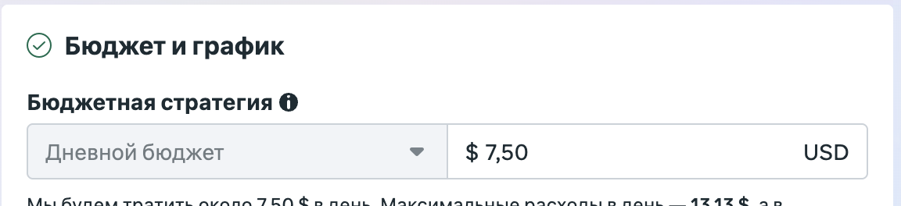
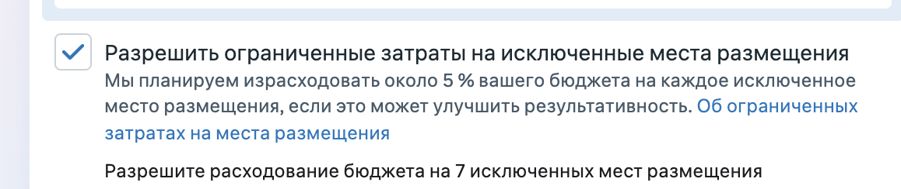
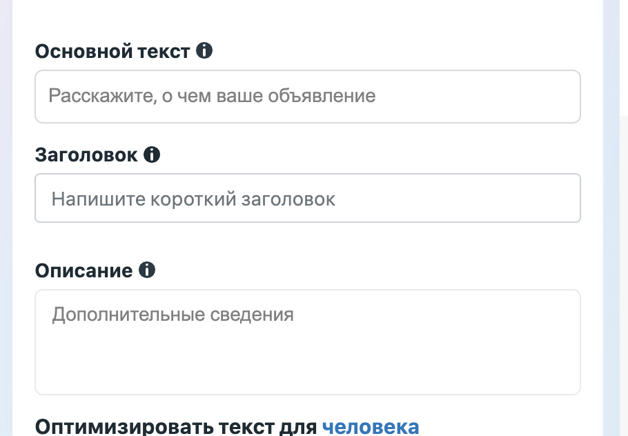
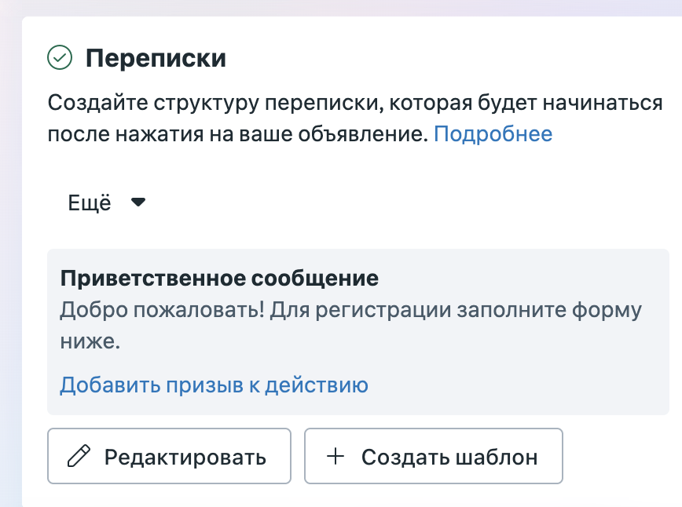
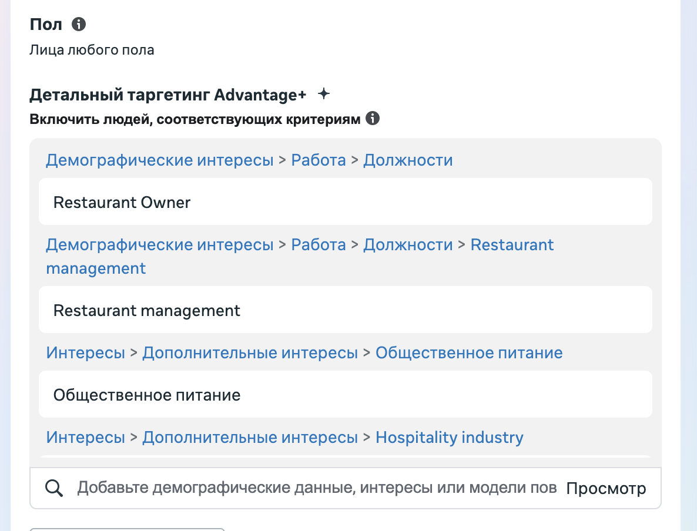
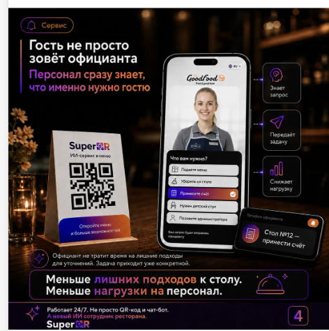

Разбор настроек кампании SuperQR: бюджет и плейсменты, тексты и переписки, таргетинг, креативы и воронка. 10 находок и план внедрения.
Дневной бюджет ниже рекомендованного старта, и до 5% уходит на неразрешённые площадки.
Пустое описание под видео и лид-форма вместо живого приветственного сообщения.
Креативы закрывают разные сферы бизнеса, а аудитория настроена только на «ресторанное дело».
Один креатив пытается закрыть все боли сразу, статика перегружена, не хватает видео.
Нет ретаргетинга и Lookalike, трафик идёт сразу на форму без прогрева.
Два независимых момента настройки, которые тратят бюджет менее эффективно, чем могли бы.


Многие пользователи открывают и читают именно описание — без него креатив выглядит незаконченным.


Приветственное сообщение делает первый контакт живее и вовлекает пользователя, форма обрывает диалог сразу.
Посылы закрывают отели, рестораны и салоны красоты, а таргетинг настроен только на «ресторанное дело» (Restaurant Owner, Restaurant management, Общественное питание).

Алгоритм Меты не умеет одинаково хорошо показывать одно объявление сразу всем сегментам аудитории.

| Метрика | Что считаем |
|---|---|
| Расход вне выбранных плейсментов | % от общего бюджета |
| CTR и CPL по сегменту креатива | Отдельно по каждой боли/аудитории |
| Стоимость лида из переписки | До / после замены формы на приветствие |
| Совпадение аудитории и креатива | По каждой группе объявлений |
| Конверсия из лендинга | Заявки / переходы на лендинг |